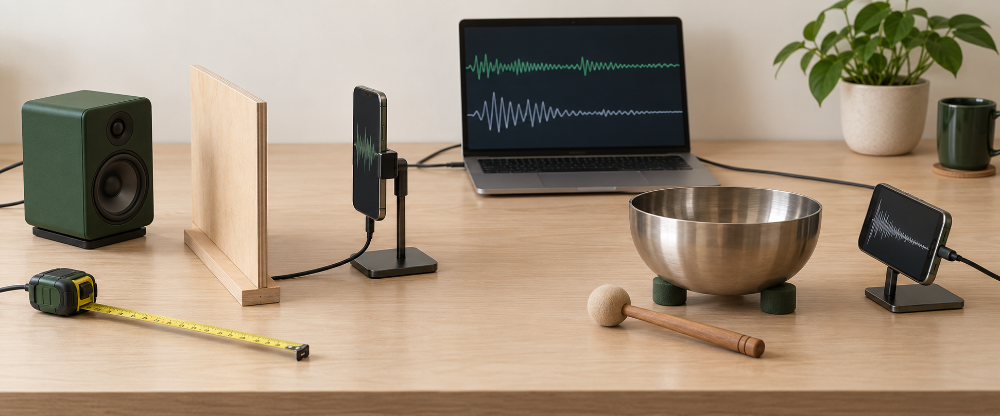
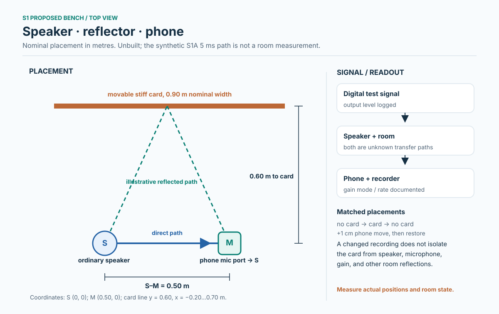

Aproposed physical protocol
Speaker + phone
Record a baseline, keep geometry fixed, then move one reflector. Compare recordings only after checking the playback and microphone chain.
View materials & stepsField guide / sound & inference
Begin with a speaker and phone, or inspect the equations without equipment. Follow each question through its controls, model result, and skeptical review.
Sequential contracts and reviews. A model result does not become a room measurement.
03conditional interpretation questionsKept apart from acoustic evidence.
01 / choose a path
Both paths converge on the same question: what observation would separate a resonant response from the source, room, and recording chain?
Record a baseline, keep geometry fixed, then move one reflector. Compare recordings only after checking the playback and microphone chain.
View materials & stepsChange transfer, reflection, and damping assumptions in four transparent synthetic models. Export the generated data and inspect which patterns are ambiguous.
Open model bench
02 / physical protocol
Proposed apparatus, not an executed measurement. The distance, device settings, and room remain part of the data.

Interpretation limit. Automatic gain control, compression, speaker response, phone filtering, noise, and room reflections can mimic a changed response. Uncalibrated phone levels cannot establish absolute sound pressure or transfer gain.
Optional known digital probe: In OpenSync NanoLab, choose Carrier-only control, set carrier 500 Hz, duration 5 s and digital gain −30 dBFS. Leave the rate field at a valid value such as 16 Hz; carrier mode ignores it. Download and keep its manifest; do not autoplay. These are file settings, not calibrated sound pressure or a shared phase reference. The gentle-tap comparison uses no playback.
Local file check
Choose a mono/stereo PCM16 or float32 WAV, or a time_s,amplitude_FS CSV. This checks duration, digital peak, RMS and possible clipping in your browser. It does not upload the file or estimate sound pressure.
No file selected. The original recording stays on your device.
Use source-off and no-object references around each test, repeat the sequence, retain discarded takes, and log actual geometry plus requested and reported processing settings.
A versioned command-line intake is being hardened and reviewed. The browser check above is available now; the S2A model uses generated PCM validation fixtures, not a field recording. The final command will be shown here when its file-preservation checks pass.
03 / before the loops
The selected question, method, and skeptical controls are documented before the sound sequence begins.
Loading the planning record…
04 / sequential record
Select any entry to inspect it. Numbered order records the research path; a future entry does not inherit the status of an earlier one.
05 / model bench
These are generated traces from explicit equations, not a recording of the apparatus above. Export the axes and parameters with each calculation.
06 / conditional questions
These B rounds audit inference if a claim moves from sound toward mind or AI. A subjective report, a physiological correlate, and independent target accuracy are different outcomes.
Loading conditional round records…
No acoustic plot, self-report, or model-agent answer establishes consciousness in AI or a metaphysical mechanism. A positive result would require its own operational definition, controls, and independent review. This protocol does not decide whether AI has subjective experience.
07 / material identity
A historical symbol may name an element, a material, or a process. A documented element mapping is not a composition assay of a particular vessel or recipe.
Loading the source-bound dictionary…
08 / reading record
Each entry distinguishes what was actually inspected from what remains a lead, a conditional model, or an unverified claim.
Loading source ledgers…